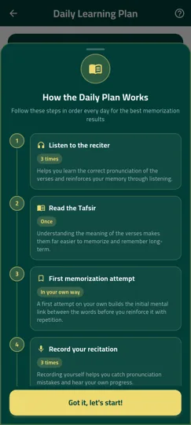
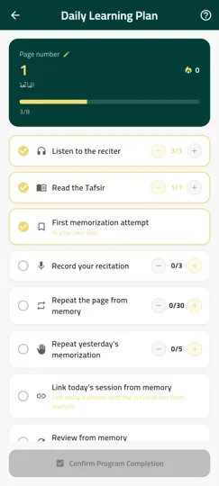
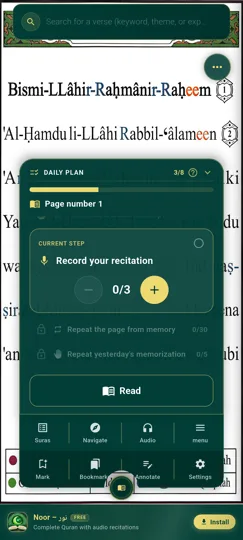

Qu'est-ce que le Hifz ?
Le Hifz désigne la mémorisation du Coran, verset par verset et sourate par sourate. C'est un parcours exigeant qui demande de la répétition régulière, de bonnes méthodes d'apprentissage et un moyen fiable de vérifier ce qui est déjà bien mémorisé.
Noor Phonetic Quran a été conçu pour accompagner ce parcours avec des outils concrets : audio, répétition, révision active et gamification, plutôt que la seule lecture répétée d'un mushaf.
Comment mémoriser le Coran avec l'application ?
- Écoutez et répétez — chaque verset dispose d'une répétition audio pour ancrer la mémorisation par l'écoute.
- Utilisez le mode mot-par-mot — décomposez les versets les plus longs pour les mémoriser progressivement.
- Testez-vous avec les quiz de révision — vérifiez régulièrement que les versets appris restent bien mémorisés.
- Gagnez des points et des badges — chaque verset mémorisé rapporte des points, fait progresser votre niveau et débloque des badges.
- Relevez des défis quotidiens — des objectifs journaliers vous encouragent à mémoriser un peu chaque jour, sans surcharge.
Aperçu du plan de mémorisation



Questions fréquentes sur la mémorisation du Coran
Combien de temps faut-il pour mémoriser le Coran ?
Cela dépend du rythme de chacun. L'application vous permet d'avancer à votre propre rythme, verset par verset, sans pression de délai.
Le mode mémorisation fonctionne-t-il hors ligne ?
Une fois les sourates chargées, la répétition audio et les quiz de révision restent disponibles sans connexion Internet.
La fonctionnalité Mémorisation est-elle gratuite ?
Oui, comme l'ensemble des fonctionnalités principales de Noor Phonetic Quran, le mode Mémorisation est entièrement gratuit.